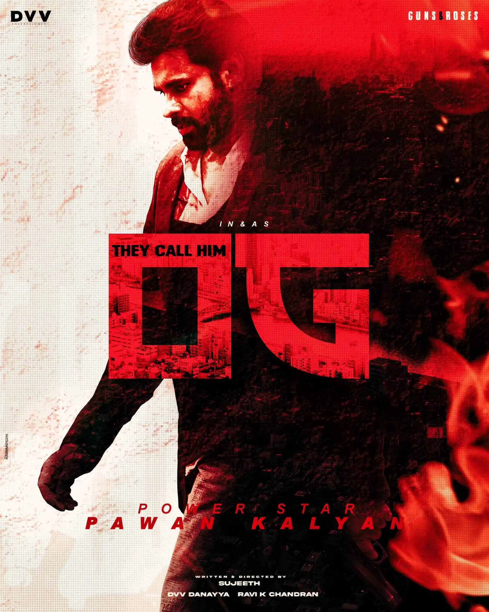

Kalyan made his acting debut in 1996 with Akkada Ammayi Ikkada Abbayi. His second film Gokulamlo
Seeta released the following year. He next appeared in A. Karunakaran-directed Tholi Prema (1999)
which won the National Award and six Nandi Awards that year. After Tholi Prema, Kalyan acted in
Thammudu, playing the role of a kick boxer. Thammudu was released on 15 July 1999 and was written
and directed by P. A. Arun Prasad. On 20 April 2000, he acted in Puri Jagannadh's first directorial
venture, Badri. Produced by T. Trivikrama Rao and music composed by Ramana Gogula.
In 2001, he acted in the film Kushi. The film was released on 27 April 2001 and was directed by S.
J. Suryah, which became a huge blockbuster that year. In 2001, he was the brand ambassador for
Pepsi at the time his brother Chiranjeevi was promoting Coca-Cola. His next film Johnny, written
and directed by himself, released on 26 April 2003. Kalyan also starred in the film, along with Renu
Desai, produced by Allu Aravind, and music composed by Ramana Gogula.
In 2008, Jalsa, directed by Trivikram Srinivas and produced by Allu Aravind was released on 2 April.
This film got the highest first-day collection in Telugu film history and was also the first for any
regional film in south India in a single state by that time. Jalsa turned out to be the highest
grosser of 2008 in Telugu cinema. Puli was written and directed by S. J. Suryah and released in
2010. An official announcement was made in the same year that Kalyan was going to play a small role
in a movie about Jesus Christ directed by Singeetam Srinivasa Rao. In 2011, he appeared in Teen
Maar, a remake of Love Aaj Kal, directed by Jayanth C. Paranjee. He also appeared in
Vishnuvardhan's gangster film Panjaa.
In 2012, he appeared in Gabbar Singh, a remake of Dabangg, directed by Harish Shankar. The film
successfully completed 100 days and stood as the second highest-grossing Telugu film at that
time. After this film, he worked in Puri Jagannadh's Cameraman Gangatho Rambabu.
In 2013, he appeared in Trivikram Srinivas's Attarintiki Daredi. The film, released on 27 September
2013, faced problems with piracy as half of the movie was leaked to the internet prior to its
release. In spite of this the movie was a blockbuster in 2013. The movie completed 100 days in
33 theaters and held the record of the highest-grossing film in Tollywood by that time, surpassing
the previous record of Magadheera. Later, it was surpassed by Baahubali: The Beginning.
In 2014, a Star India survey ranked Kalyan as one of the Top 5 Heroes of India.In 2015, he
appeared in Gopala Gopala, a Telugu remake of OMG - Oh My God!.The film featured Kalyan
starring alongside Venkatesh and was directed by Kishore Kumar Pardasani. In 2016, Kalyan's Sardaar
Gabbar Singh, a sequel to his 2012 film Gabbar Singh received poor reviews from critics.[citation
needed] Katamarayudu (2017), a remake of Tamil film Veeram marked his second collaboration with
Kishore Kumar Pardasani. In 2018, he appeared in the film Agnyaathavaasi directed by Trivikram
Srinivas. This marked Kalyan's 25th film.
His latest upcoming movie is "OG".
